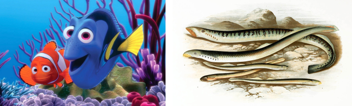
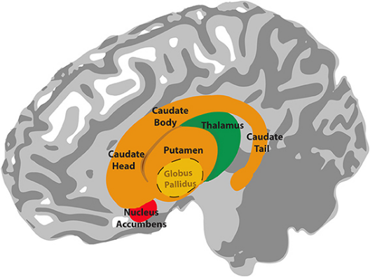
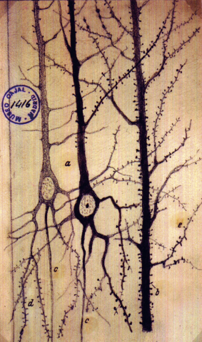

The Untold Story of Self-Conscious Intelligence
“Like Daniel Wolpert says, I’m a motor chauvinist. The nervous system evolved to move, and then everything else is sort of a footnote.” – John W. Krakauer
I came across this line the other day by chance while listening to a research talk recorded eight years ago from a person I didn’t know about.1 It taps into something I’ve thought about for over a decade, though, so it stuck with me. The professor said it tongue-in-cheek, which somehow makes it ring a little louder. Our minds, our consciousness, our love and our hate– how could this all be about moving?
My initial reaction is that no, the nervous system did not evolve solely to move; it emerged from an evolutionary pressure to respond to the environment, where the ability to move was one of several features that conferred a selective advantage in the organisms that are ancestral to animals. Hmph, I thought, that clever line from the professor caught my attention, but he knows it’s hollow, too. I thought about some other life forms that don’t have nervous systems but do respond to the environment– plants, fungi, bacteria. OK, there is quite a big difference here between animal movement and what we see in these other branches. Maybe I’m not done with this yet.
Vertebrate life– animals with a brain and a spinal cord– first began in the waters. What you think of as a “fish” doesn’t really capture the diversity of vertebrates that live underwater. You’re thinking of something from Finding Nemo, and certainly that’s a fish! It’s just that, evolutionarily speaking, “fish” also includes creatures like sharks, eels, manta rays, and something called a lamprey. Lampreys are neither pretty nor friendly, but they do have something in their nervous system that appears for the first time on Earth: the basal ganglia. Despite the definite article in the name, the basal ganglia are a collection of brain structures, not an individual unit, that are grouped together based on a common functioning and developmental origin. Regardless, the basal ganglia are largely conserved– meaning the system hasn’t changed much at all– over 500 million years of evolutionary time, from its emergence in lampreys through to humans today. Let that sink in for a bit.

Nemo and Dory are fish (left). Lampreys are also fish (right).
To have a functional paradigm anywhere in the nervous system, let alone in biology, remain conserved for that long means that it must be doing something right. If I had to sum up the function of the basal ganglia in one word, it would be movement. If I could use two words, those would be action selection. Whenever the brain is trying to decide where, when, or how to move, you can bet that the basal ganglia is involved.2 There are some higher level, cognitive roles for the basal ganglia as well, but those truly are footnotes in this case, as they developed much later in evolutionary time– the basal ganglia in lampreys are for movements, first and foremost.
Lampreys have another part of the vertebrate brain called the thalamus, which functions like a gateway hub to route information around the brain from one source to another, much like a central train station or an international airport. However, unlike the basal ganglia, the thalamus shows drastic changes over the 500 million years from then until now across the other vertebrate groups. Though its particular structure shows many alterations over time, its function as an interconnected signal router remains the same, and the thalamus invariably works closely with the basal ganglia to coordinate movement. While the thalamus is doing many other things beyond movement, such as facilitating sensory processing like vision and hearing, the fact that it arises in the evolutionary timeline in concert with the basal ganglia is consistent with the suggestion that its original, primary advantage was for movement.
That now brings us to the final, and perhaps most interesting, member of this movement troupe: the pallium. I know you haven’t heard this word before. It’s from the Latin for cloak, because the pallium is the outermost part of the brain. Surely, you’re thinking of the neocortex (or maybe just the cortex), that gray, wrinkly, mushy mess, as your conception of what a brain is. Well, prepare for these hot takes, any of which could be their own essay: the neocortex is not the only part of the pallium; the neocortex is not necessary for producing advanced, complex behaviors; and the pallium is only one part of the vertebrate brain. The pallium has a critical role, though: it synthesizes with the basal ganglia and thalamus to coordinate movement. Throughout vertebrate evolution, from lampreys into humans, the pallium shows increasing sophistication at every step, continually adopting a wider and improved array of functions, including consciousness, introspection, and, really, anything else we can think of. The story of vertebrate brain evolution could very well be thought of as the story of the pallium.

Note how the components of the basal ganglia (orange, yellow, and red) and the thalamus (green) reside underneath the neocortex (gray, wrinkly). Image credit: Lim S-J, Fiez JA and Holt LL, CC BY 3.0 https://creativecommons.org/licenses/by/3.0, via Wikimedia Commons.
Nonetheless, I’m still ready to buy the argument that the pallium was first for movement, and anything else second. While lampreys don’t do math or write screenplays (as far as we can tell), they do move, and they move well. If they couldn’t, after all, they wouldn’t be able to find food or avoid predators, and ultimately, I wouldn’t be able to write this here today, nor could you read it.3 It really makes sense to me that at the dawn of vertebrates, evolution selected the pallio-basal ganglia-thalamic loop4 as the mechanism most adept for movement, thereby best ensuring survival and reproduction, compared to any competing options now removed from the fossil record that we will never know. An informed reader may notice at this point that I have completely left out discussion of the cerebellum, a brain structure obviously dedicated to movement that is common across all vertebrates. Although it’s certainly an intriguing brain region, I have made this elision because I think the cerebellum is too specialized for movement for the point I want to make later, even though it’s not exclusively involved in movement, either.
If we grant that the primordial function of the pallio-basal ganglia-thalamic loop was for movement and movement alone, the mechanisms of some other innovations throughout vertebrate brain evolution start to make a bit more sense. For instance, the circuits involved in vocal learning and production, including speech and language in humans, appear to have their origins in circuits for motor learning and performance.5 Taking this a step further, some hypotheses propose that cognition itself arises from modeling used by the brain to predict and evaluate motor behaviors, such as reaching for a cup or shooting a basketball, which requires an estimate to target the location and modify the effort for a future attempt. It’s not that preposterous of a leap to consider that generalizing this modeling capacity to non-motor actions could engender something like conscious thought.
OK– the vertebrate brain may have been optimized for movement first, but how could this also apply to nervous systems as a whole, which covers much broader territory?
If you could look at us under a microscope along with any other animal on Earth– including creatures like squid, ants, and mosquitoes– you would see identical cell types (which is one way that animals differ from, say, plants or fungi, which have distinct cell structures), and crucially, a uniform implementation of the nervous system.6 I don’t mean that every animal has the same nervous system, because obviously there are countless differences. What I mean is that the fundamental nuts-and-bolts are the same: individual cells called neurons are interconnected and send chemical signals to one another through specialized structures called dendrites and axons. Dendrites look like messy plant roots, as they route information into the neurons. An axon looks like a singular tree trunk, as each neuron contains only one and this routes information out of the neuron. This description summarizes the neuron doctrine, a tenet of modern neuroscience which holds that individual neuronal signalling underpins nervous system function and, ultimately, behavior. It’s worth noting that although the neuron doctrine emerged from a lengthy historical debate, it doesn’t mean it explains everything or that there aren’t competing hypotheses.

Actual neurons of the human brain chemically stained by the neuroscientist Santiago Ramón y Cajal (1852-1934) that led to the acceptance of the neuron doctrine. Image from: Glickstein, M. (2006). Golgi and Cajal: The neuron doctrine and the 100th anniversary of the 1906 Nobel Prize. Current Biology. 10.1016/j.cub.2006.02.053
Now I can clarify the point I want to make. What if the neuron doctrine doesn’t explain movement? What if it’s the other way around… what if movement explains the neuron doctrine?
To move, an animal’s nervous system first needs to input sensory information, such as what is immediately around it and where it could actually go. Then it needs to integrate this information into some sort of higher-level model that can compute a plan to get to a new location, including the amount of energy to exert and capabilities required (you may notice that many insects avoid water, or that most creatures don’t even try to jump across a large gap). At the final step, the nervous system needs to execute the behavior, somehow physically moving the limbs that support the body and make the action a reality. If you were building a system from scratch to accomplish all of this, how might you go about it?
At the most abstract level, removed from technical details, you would need a system that can interpret the external environment, generate an internal model of the body’s relationship with said environment, and then create the output to make changes to that relationship. Nature has discovered that individual cells (which existed before neurons ever arrived) can achieve this when they can communicate with each other. Communication is the key to the nervous system much more than neurons are. Just look at the immune system and endocrine (hormone) system, which are the other communication systems in animals that use intricate sets of chemicals to modulate various physiological processes. The difference is that these systems don’t directly impinge on behavior, which remains the domain of the nervous system. I’m sure you’ve heard or made comments about “hormones affecting behavior”– yet to be pedantic, and also accurate, hormones themselves don’t affect behavior. They modify the probabilities that neurons will signal in certain ways, which then downstream affects behavior.
We already know, then, that the body can communicate without neurons. To move, though? As far as we see in life on Earth, you need neurons, or something with very similar features.7 I had never, ever thought about it this way before– in high school biology, college neuroscience, PhD behavioural neuroendocrinology, postdoctoral comparative neurobiology– but I have to say, I think I’m convinced. The nervous system has evolved to move, and everything else has developed secondarily.
Sometimes I am so embarrassed by the capabilities of artificial intelligences, with their vastly superior performance in almost anything computational or high-dimensional, that it really makes me feel useless. Other times I am so smug that those intelligences don’t quite, nor will likely ever, fully grasp the nuances of human social behavior or what it means to feel emotion, which grants me some advantage, however small. Now, though, I can rest knowing that I was never meant to be a computer. My own thoughts arose from a dance with this ephemeral world, as my collective matter tested various ways to navigate through it all, not so that I would be able to derive mathematical truths from cosmic patterns, but so that my embodied self would continue to persist. It’s a wonder I can even communicate at all.8
Your readership is more than enough. Still, if you’d like to buy me a coffee, it’s the clearest signal to keep writing.
Footnotes
I hope FanDuel doesn’t get any ideas.↩︎
Assuming I’m from this planet, of course.↩︎
Clunky phrasing, and the one currently entrenched.↩︎
With the exception of the Ctenophores (comb jellies), which appear to have an independently evolved nervous system. I highly recommend Brains Through Time by Striedter & Northcutt for a sweeping summary of vertebrate brain evolution.↩︎
Referring to the note above about Ctenophores, their movement-signalling system still has the same goals of other nervous systems, but solves it in a different way.↩︎
This line came to me as a reference to the song “AEIOU And Sometimes Y” by Ebn-Ozn: “There are 178 parent languages on our planet with over 1000 dialects… It’s amazing we communicate at all.”↩︎